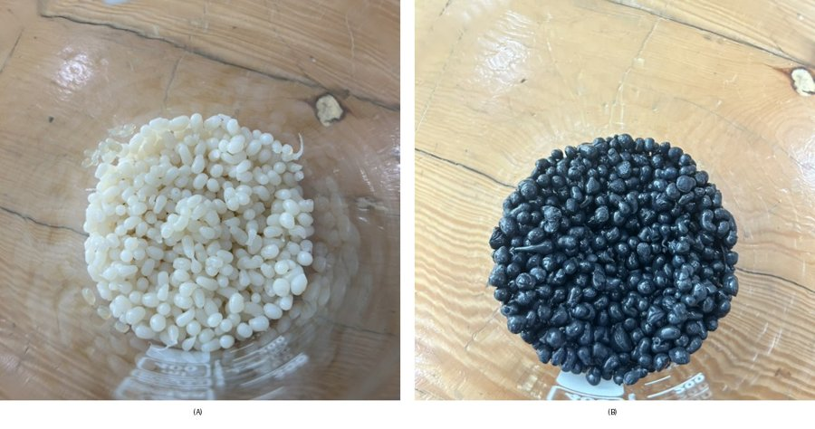
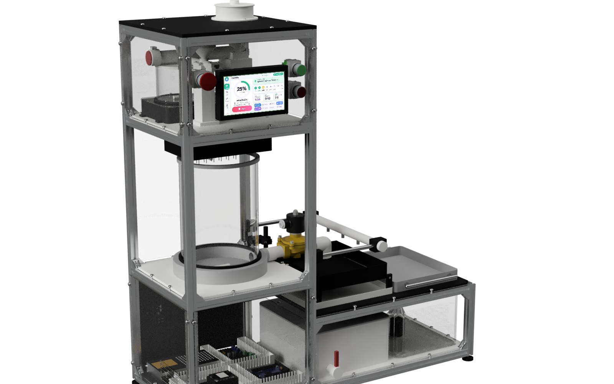
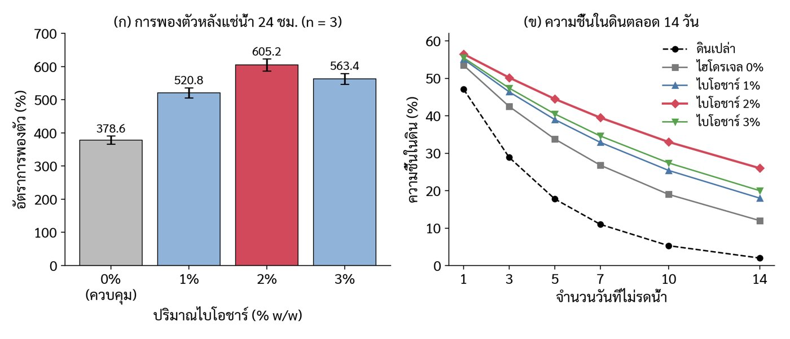
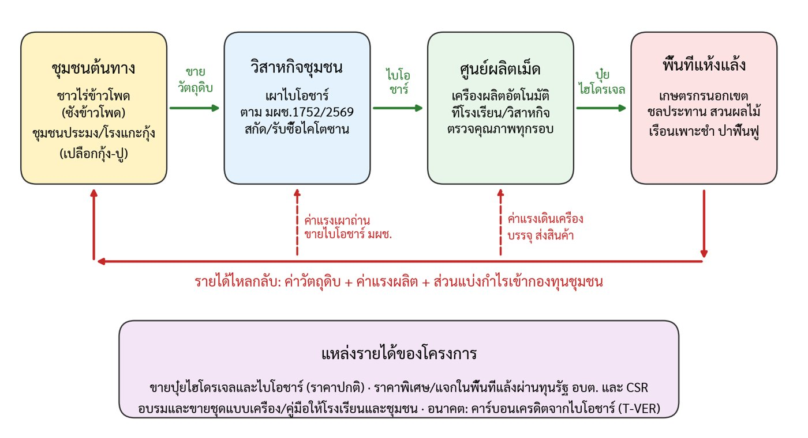

💧 ทำไมต้องช่วยดินอุ้มน้ำ
พื้นที่เกษตรของไทยส่วนใหญ่อยู่นอกเขตชลประทาน ปี 2565 มีพื้นที่ชลประทานที่พัฒนาแล้ว 35.23 ล้านไร่ จากพื้นที่เกษตร 149.25 ล้านไร่ (ราว 24% คำนวณจากรายงานกรมชลประทาน) ช่วงฝนทิ้งช่วง ดินที่เก็บน้ำได้นานกว่าช่วยให้พืชรอดได้มากกว่า♻️ ทำไมต้องเป็นของเหลือทิ้ง
ซังและตอซังข้าวโพดมักถูกเผาในที่โล่ง ซึ่งเป็นต้นเหตุสำคัญของหมอกควันและ PM2.5 ส่วนเปลือกกุ้งเป็นของเหลือจากอุตสาหกรรมอาหารทะเล นำมาทำเป็นไบโอชาร์และไคโตซานแทน ได้ทั้งลดขยะ ลดควัน และได้วัสดุปรับปรุงดินที่ย่อยสลายได้⚫ทำไบโอชาร์ (ถ่านชีวภาพ) จากซังข้าวโพด
ไบโอชาร์คือถ่านที่ได้จากการเผาวัสดุเหลือใช้ทางการเกษตรแบบ จำกัดออกซิเจน (ไพโรไลซิส) ไม่ใช่เผาจนเป็นขี้เถ้า
หลักสำคัญ (จากกรมพัฒนาที่ดิน และ มผช.1752/2569)
- วัตถุดิบ: เศษวัสดุทางการเกษตรที่ย่อยสลายได้ เช่น ซังข้าวโพด ฟางข้าว แกลบ กะลามะพร้าว ชานอ้อย กิ่งไม้ ใบไม้ เปลือกผลไม้
- เผาแบบช้า (slow pyrolysis) ใช้เวลาเป็นชั่วโมง อุณหภูมิ 350–600 °C ในสภาวะออกซิเจนจำกัด
- มาตรฐานผลิตภัณฑ์ชุมชนกำหนดอุณหภูมิ ไม่น้อยกว่า 350 °C คาร์บอนจะถูกเก็บไว้ในดินได้ระยะยาว
- เตาเผาแบบถัง 200 ลิตร ได้ถ่านไบโอชาร์ราว 45% ของวัสดุที่ใส่ (งานวิจัยตอซังและฟางข้าวที่กรมพัฒนาที่ดินอ้างถึง)
ขั้นตอนทั่วไปกับเตาถัง 200 ลิตร
- ตากซังข้าวโพดให้แห้ง ยิ่งแห้งยิ่งเผาง่าย ควันน้อย ได้ถ่านสม่ำเสมอ
- บรรจุให้แน่นพอดี แล้วจุดไฟจากด้านบน ให้ไฟค่อย ๆ ลามลง
- สังเกตควัน ช่วงแรกควันขาวหนา (ไล่ความชื้น) เมื่อควันจางลงจนเกือบใส แปลว่าเผาใกล้เสร็จ
- ปิดช่องอากาศทั้งหมด ปิดฝาให้สนิท ทิ้งให้เย็นในเตา (ข้ามคืน) ห้ามเปิดตอนร้อน เพราะถ่านจะลุกเป็นไฟและกลายเป็นขี้เถ้า
- ดับให้สนิท ถ้าไม่แน่ใจ ให้พรมน้ำ แล้วตากให้แห้ง (ความชื้นไม่เกิน 20% ตามมาตรฐาน)
- ทุบให้เล็ก ขนาดเฉลี่ยไม่เกิน 1 ซม. เพื่อให้คลุกกับดินได้ง่าย
แบบเตาและรายละเอียดต่างกันไปตามพื้นที่ แนะนำให้ขอคำแนะนำหรือเข้าอบรมกับสถานีพัฒนาที่ดินประจำจังหวัด (สายด่วนกรมพัฒนาที่ดิน 1760)
⚠️ ความปลอดภัย เผาในที่โล่ง ห่างบ้านและเชื้อเพลิง เตรียมน้ำดับไฟ ไม่อยู่ใต้ลมควัน (มีคาร์บอนมอนอกไซด์และทาร์)
สวมถุงมือกันความร้อนและหน้ากาก ห้ามเผาวัสดุที่ปนพลาสติกหรือสารเคมี
✅ตรวจคุณภาพไบโอชาร์ตาม มผช.1752/2569
มาตรฐานผลิตภัณฑ์ชุมชน “ถ่านชีวภาพสำหรับปรับปรุงดิน” ประกาศ 5 มิถุนายน 2569 ถ้าผ่านเกณฑ์ ชุมชนยื่นขอการรับรอง มผช. แล้วจำหน่ายเป็นสินค้าชุมชนได้
| รายการ | เกณฑ์ (มผช.) | ตรวจเองเบื้องต้นได้อย่างไร |
|---|---|---|
| ลักษณะทั่วไป | ขนาดใกล้เคียงกัน สีดำสม่ำเสมอ ไม่มีสิ่งแปลกปลอม | ดูด้วยตา ไม่มีขี้เถ้าขาวหรือเศษที่ยังไม่ไหม้ |
| ความชื้น | ไม่เกิน 20% โดยน้ำหนัก | ชั่ง แล้วตากหรืออบจนน้ำหนักคงที่ (ใช้เครื่องคำนวณด้านล่าง) |
| ความเป็นกรด-ด่าง (pH) | ตั้งแต่ 7.0 ขึ้นไป | แช่ถ่านในน้ำสะอาด วัดด้วยกระดาษหรือเครื่องวัด pH |
| อัตราส่วน H/Corg | ไม่เกิน 0.7 | ต้องส่งห้องปฏิบัติการวิเคราะห์ (บอกว่าเผาถึงขั้นเป็นคาร์บอนเสถียรแล้ว) |
| ความสามารถในการอุ้มน้ำ | ไม่น้อยกว่า 1 เท่าของมวลแห้ง | แช่น้ำ สะเด็ดน้ำ แล้วชั่ง (ใช้เครื่องคำนวณด้านล่าง) |
| ฉลาก | ชื่อผลิตภัณฑ์ น้ำหนักสุทธิ เดือนปีที่ทำ วิธีใช้ ชื่อและที่ตั้งผู้ทำ | พิมพ์ฉลากตามรายการนี้ |
🧮 ความชื้น
กรอกตัวเลขเพื่อคำนวณ
🧮 การอุ้มน้ำ
กรอกตัวเลขเพื่อคำนวณ
เครื่องคำนวณนี้ใช้ตรวจเบื้องต้นเท่านั้น การรับรอง มผช. ต้องทดสอบตามวิธีมาตรฐานที่ระบุ (เช่น ISO 18134-1, ISO 10390, ISO 14238)
🌱ใช้ไบโอชาร์ในแปลงปลูก
- ทุบถ่านให้เล็ก เฉลี่ยไม่เกิน 1 ซม. ถ่านก้อนใหญ่เกะกะรากพืช
- ผสมกับปุ๋ยหมักหรือปุ๋ยคอก สัดส่วนราว 50% คลุกให้เป็นเนื้อเดียวกัน ถ่านจะดูดธาตุอาหารเก็บไว้ก่อน (จะรดด้วยน้ำหมักชีวภาพด้วยก็ได้)
- โรยตอนเตรียมดิน รดน้ำให้ชุ่มให้ถ่านดูดน้ำ แล้วพรวนลึก 10–20 ซม. รดน้ำอีกครั้ง
- ปลูกพืชตามปกติ งานวิจัยกับผักคะน้าที่ผสมถ่าน 50% ในปุ๋ยหมัก ได้ผลผลิตเท่ากับใช้ปุ๋ยหมักอย่างเดียว
💡 ข้อมูลน่ารู้ ไบโอชาร์มีรูพรุนและพื้นที่ผิวมาก มีประจุลบ จึงช่วยเก็บน้ำและธาตุอาหาร และเป็นที่อยู่ของจุลินทรีย์
งานวิจัยที่กรมพัฒนาที่ดินอ้างถึงพบว่าไบโอชาร์จากเศษข้าวโพดมีพื้นที่ผิวจำเพาะ 93.36 ตร.ม./กรัม ส่วนดินทรายผสมไบโอชาร์ 10% เก็บความชื้นได้นาน 104 ชั่วโมง
ทั้งนี้อัตราที่เหมาะสมขึ้นกับชนิดดินและพืช ควรลองแปลงเล็กก่อน
🦐ไคโตซานจากเปลือกกุ้ง
เปลือกกุ้งมีไคติน แร่ธาตุ (หินปูน) และโปรตีน ต้องเอาแร่ธาตุกับโปรตีนออกก่อนจะได้ไคติน แล้วต้มกับด่างเข้มข้นจนได้ไคโตซาน
⚠️ อ่านก่อน ขั้นตอนสุดท้ายใช้โซเดียมไฮดรอกไซด์ (โซดาไฟ) เข้มข้น 50% ที่ 100 °C ซึ่งกัดผิวหนังและตาได้รุนแรง
ควรทำในห้องปฏิบัติการของโรงเรียนหรือมหาวิทยาลัยโดยมีครูหรือผู้เชี่ยวชาญดูแล สวมแว่นตา ถุงมือ และผ้ากันเปื้อนกันสารเคมีทุกครั้ง
เกษตรกรทั่วไปแนะนำให้ซื้อไคโตซานเกรดเกษตร หรือรวมกลุ่มกับวิสาหกิจชุมชนหรือสถาบันการศึกษาในพื้นที่
ขั้นตอนตามงานวิจัยของ มหาวิทยาลัยเทคโนโลยีพระจอมเกล้าพระนครเหนือ (2560)
- เตรียมเปลือก ล้างแยกเนื้อและไขมัน ต้มเปลือกในน้ำเดือด 3 นาที แล้วตัดเป็นชิ้นราว 1×1 ซม. (เปลือกต้มสุกให้ไคโตซานมากกว่าเปลือกดิบ)
- กำจัดแร่ธาตุ แช่กรดไฮโดรคลอริก 2 โมลาร์ (เปลือก 1 ส่วน : กรด 20 ส่วน) กวน 2 ชั่วโมงที่อุณหภูมิห้อง ล้างน้ำจนเป็นกลาง
- กำจัดโปรตีน แช่โซเดียมไฮดรอกไซด์ 2 โมลาร์ (1 : 20) กวน 2 ชั่วโมงที่อุณหภูมิห้อง ล้างน้ำจนเป็นกลาง จะได้ ไคติน
- เปลี่ยนเป็นไคโตซาน ต้มไคตินในโซเดียมไฮดรอกไซด์ 50% (1 : 100) ที่ 100 °C เปลี่ยนสารละลายทุก 1 ชั่วโมง รวม 2 ชั่วโมง
- ล้างและอบ ล้างน้ำจนเป็นกลาง อบที่ 60 °C นาน 24 ชั่วโมง แล้วบดเป็นผง
ผลที่ได้: เปลือกกุ้งสุกให้ไคโตซาน 46.61% ส่วนเปลือกดิบได้ 38.59% (โดยน้ำหนักแห้ง)
และไคโตซานที่ได้มีโครงสร้างใกล้เคียงไคโตซานทางการค้า (ตรวจด้วย FT-IR)
ทดสอบง่าย ๆ ว่าได้ไคโตซานแล้ว
ผงไคโตซานจะ ละลายในกรดอะซิติกเจือจาง 1% (น้ำส้มสายชูเจือจาง) เป็นของเหลวหนืดใส ส่วนไคตินที่ยังเปลี่ยนไม่สมบูรณ์จะไม่ละลาย♻️ น้ำทิ้ง น้ำล้างกรดและด่างต้องปรับให้เป็นกลาง (pH 6–9) ก่อนทิ้ง โดยค่อย ๆ ผสมน้ำกรดกับน้ำด่างเข้าด้วยกันและวัด pH ห้ามเทลงแหล่งน้ำโดยตรง
🫧เม็ดไฮโดรเจลไคโตซาน–ไบโอชาร์ (สูตรของโครงงาน)
นำสองวัสดุมารวมกัน ไคโตซานทำหน้าที่เป็นโครงเม็ดที่ย่อยสลายได้ ส่วนไบโอชาร์ช่วยเพิ่มรูพรุนสำหรับเก็บน้ำ


สูตรมาตรฐาน
- ละลายไคโตซาน 6% (น้ำหนักต่อปริมาตร) ในกรดอะซิติก 1 โมลาร์ กวนราว 2 ชั่วโมง
- เติมผงไบโอชาร์ซังข้าวโพด (ร่อน 100 เมช) 2% โดยน้ำหนัก กวน 30 นาที
- หยดลงในโซเดียมไฮดรอกไซด์ 2 โมลาร์ จะเกิดเม็ด 2–4 มม. แช่ให้เซ็ตตัว 6 ชั่วโมง
- ล้างน้ำจน pH ประมาณ 7 แล้วอบ 60 °C นาน 24 ชั่วโมง
🧮 คำนวณวัตถุดิบต่อรอบ
ผลทดลองของทีม (ทดลอง 3 ซ้ำ)
| สูตรไบโอชาร์ | 0% | 1% | 2% | 3% | ดินเปล่า |
|---|---|---|---|---|---|
| ดูดน้ำ (% ของน้ำหนักเม็ดแห้ง) | 378.6 | 520.8 | 605.2 | 563.4 | – |
| ความชื้นดินวันที่ 14 ไม่รดน้ำ (%) | 12.0 | 18.0 | 26.0 | 20.0 | 2.0 |

ทดลองในกระถางดินร่วนที่ยังไม่มีพืช ผสมเม็ด 10 กรัมต่อดิน 1 กก. เป็นการทดลองขนาดเล็กระดับโรงเรียน ต้องยืนยันด้วยการปลูกพืชจริงต่อไป
🤝ชุมชนได้อะไร: รับซื้อของเหลือทิ้ง ช่วยพื้นที่แล้ง
โมเดลธุรกิจเพื่อสังคมของโครงงาน รายได้ไหลกลับสู่ชุมชนในทุกขั้น

1 ขายซังข้าวโพดและเปลือกกุ้งที่เคยไม่มีราคา
2 ค่าแรงผลิตไบโอชาร์ และขายไบโอชาร์มาตรฐาน มผช.
3 ค่าแรงเดินเครื่อง บรรจุ และส่งสินค้า
4 ส่วนแบ่งกำไรเข้ากองทุนชุมชน
พื้นที่แห้งแล้งได้รับเม็ดอุ้มน้ำราคาพิเศษผ่านทุนรัฐ อบต. และ CSR · ราคารับซื้อ/ขายจะกำหนดจากต้นทุนจริงในช่วงนำร่อง
📖แหล่งข้อมูลและหน่วยงานที่ติดต่อได้
- ดวงใจ วัยเจริญ และเกษร จำปา. (2562). ไบโอชาร์ (Biochar) ถ่านชีวภาพ ตัวช่วยปรับปรุงคุณภาพดิน. ศูนย์ศึกษาการพัฒนาเขาหินซ้อนอันเนื่องมาจากพระราชดำริ สำนักงานพัฒนาที่ดินเขต 2 กรมพัฒนาที่ดิน. เอกสาร
- สำนักงานมาตรฐานผลิตภัณฑ์อุตสาหกรรม. (2569). มาตรฐานผลิตภัณฑ์ชุมชน ถ่านชีวภาพสำหรับปรับปรุงดิน มผช.1752/2569. เอกสาร
- สุธีรา ขันทพันธ์ และสุธิดา อัครชนียากร. (2560). การศึกษาเปรียบเทียบสมบัติของไคโตซานจากเปลือกกุ้งดิบและเปลือกกุ้งสุก. วารสารวิทยาศาสตร์ประยุกต์ 16(1), 74–86. มหาวิทยาลัยเทคโนโลยีพระจอมเกล้าพระนครเหนือ. doi
- กรมชลประทาน. (2565). สรุปผลการดำเนินงานประจำปี 2565. เอกสาร
ติดต่อขอคำแนะนำหรืออบรม
- กรมพัฒนาที่ดิน: สถานีพัฒนาที่ดินประจำจังหวัด / หมอดินอาสาประจำหมู่บ้าน (สายด่วน 1760) เรื่องการทำและใช้ถ่านชีวภาพ
- ศูนย์ศึกษาการพัฒนาอันเนื่องมาจากพระราชดำริ (เช่น เขาหินซ้อน จ.ฉะเชิงเทรา) เป็นแหล่งเรียนรู้เรื่องการปรับปรุงดิน
- สำนักงานอุตสาหกรรมจังหวัด เรื่องการยื่นขอการรับรองมาตรฐานผลิตภัณฑ์ชุมชน (มผช.)